<DOCTYPE HTML>
<html>
<head>
	<title>zhaodifont</title>
	<meta charset='utf-8'>
	<meta name="viewport" content="width=device-width,initial-scale=1,maximum-scale=1,user-scalable=0" >

	<link rel="stylesheet" href="css/base.css">
	<link rel="stylesheet" href="css/page.css">
	<script src="js/starMove.js"></script>
</head>
<body>
	<div class="header" id="header">
		<h1 class="bg_514 fl_l pos_ab row10"><a href="javascript:void(0)"></a></h1>
		<div class="nav pos_ab bg_514 row90" id="nav">
			<div class="handle fl_r" id="blind_nav">
				<span class="ft ft_recart ft_fff ft26" style="top:42px"></span>
			</div>
			<div class="fl_r pos_re" id="add_icon">
				<!-- <div class="lit_a"></div> -->
				<ul>
					<li><a href="javascript:void(0)">HOME</a></li>
					<li><a href="javascript:void(0)">ABOUT ME</a></li>
					<li><a href="javascript:void(0)">SOME</a></li>
					<li><a href="javascript:void(0)">OTHER</a></li>
				</ul>
			</div>
		</div>
	</div>

	<div class="container boxs">
		<div class="cloud_near"></div>
		<div class="cloud_far"></div>
		<div class="fence"></div>
		<div class="tree"></div>
		<div class="bush1"></div>
		<div class="bush2"></div>
		<!-- <div class="birdsa"><div class="bordsa_a"></div></div> -->
	</div>

</body>
<script>

// nav 移动下标
new add_navicon($('add_icon')).init();

// 添加 blind

function blindBtn(faParent,btn){
	var a = true;
	var oldw = faParent.offsetWidth;
	btn.onclick=function(){
		if(a){
			starMove(faParent,{width:this.offsetWidth})
			a = false;
			console.log(a)
		}
		else if(!a){
			starMove(faParent,{width:oldw})
			a = true;
		}
	}
}

blindBtn($('header'),$('blind_nav'));

</script>
</html>